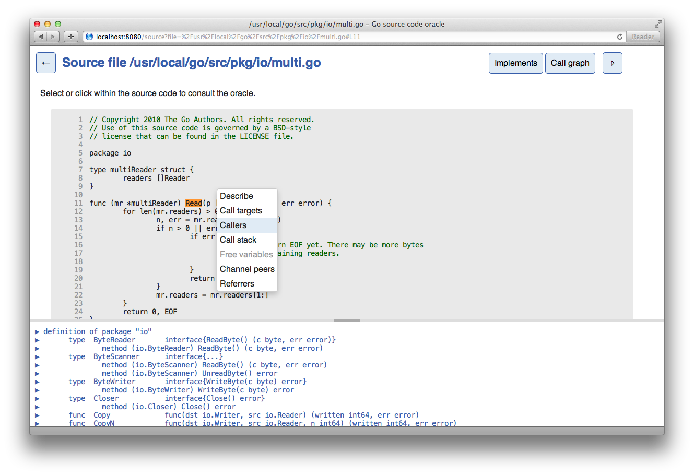

Pythia is a web frontend for the Go source code oracle, which is a source code comprehension tool for Go programs.
For more information on the Go oracle, see the original announcement.
Installing from source
Pythia requires a recent (= 1.2RC or tip) version of the GOROOT libraries.
To install, run
$ go get github.com/fzipp/pythia
You will now find a pythia binary in your $GOPATH/bin directory.
Running
Start the web application with a package path, e.g.:
$ pythia net/http
By default it will listen on port :8080 and try to launch the application
in your browser. You can choose a different port via the -http flag, e.g.:
$ pythia -http=:6060 fmt
Run pythia -help for more information.